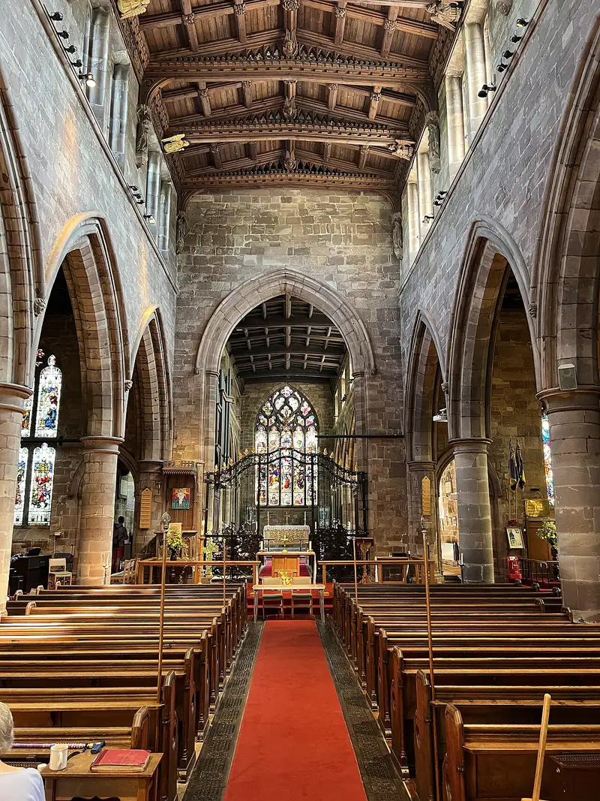

Holy Communion at 10:30
Every Sunday except the third, with the organ, hymns and the words on the screens. Everyone is welcome, whether it's your first time or you come every week.
- Next service
- Sunday at 10:30
- Finishes
- Usually between 11:30 and 12
- Where
- Church Road, Penkridge ST19 5AW

Your first Sunday
There's no need to book, and nobody expects you to know what to do. Come in, find a seat wherever you like, and someone will usually say hello.
The service follows Common Worship, and all the words are up on the screens, so you can join in or simply listen. When it comes to communion, everyone is welcome to come up to the rail, either to receive it or for a blessing, and it's just as fine to stay in your seat.
It usually finishes between 11:30 and 12. Stay and chat if you'd like to, or slip away quietly. Either way, you'll be very welcome back.
Children
Children are welcome at every service. For something made for families, Messy Church meets once a month, with crafts, a short celebration and food to share.
See what's onThe third Sunday
On the third Sunday of the month the pattern changes. Check the parish Facebook page for that week's service and time.
Parish Facebook pageBig moments
For baptisms, weddings and funerals, talk to the Rector. Each one can be arranged around you and your family.
Life events